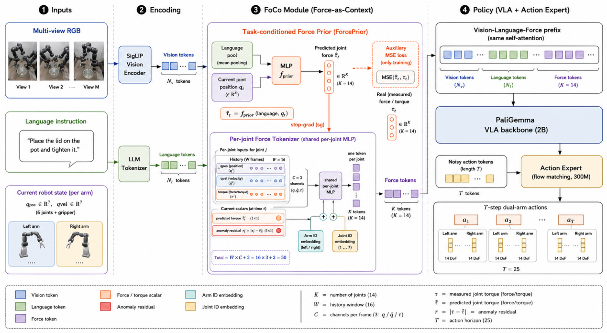
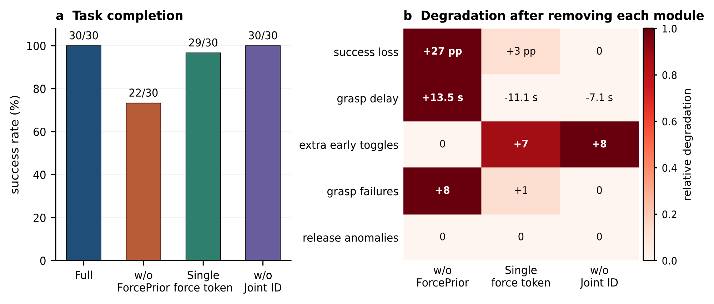
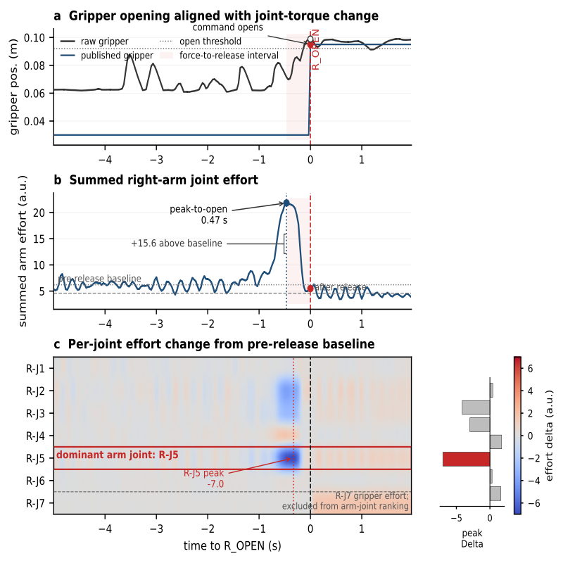

Force-as-Context
Joint position, velocity, and filtered effort history are encoded as force context tokens in the VLA prefix.
Target venue: IEEE Robotics and Automation Letters (RA-L)
Robotics PhD research project · embodied manipulation · force-aware VLA

FoCo-VLA studies how force and torque history should be represented in vision-language-action policies for contact-rich manipulation. Instead of appending force as a flat state vector, FoCo-VLA turns force history into structured context tokens that join the vision-language prefix before continuous action generation.
Joint position, velocity, and filtered effort history are encoded as force context tokens in the VLA prefix.
A lightweight prior predicts expected task force, separating nominal contact from residual contact deviation.
Each joint receives an explicit token with arm and joint identity, preserving local contact structure in the dual-arm system.
Release timing under human pull and contact-state switch.
Pose offset, alignment, contact constraints, and jamming.
Continuous surface contact and Z-axis depth generalization.
Experiments are designed around real contact metrics, not only final task success. The RA-L version will report task completion, release timing, jamming/contact loss, and robustness under depth or pose perturbations.


@article{focovla2026,
title = {FoCo-VLA: Force-as-Context Vision-Language-Action Policies for Contact-Rich Manipulation},
author = {Author List},
journal = {IEEE Robotics and Automation Letters},
year = {2026},
note = {Under preparation}
}